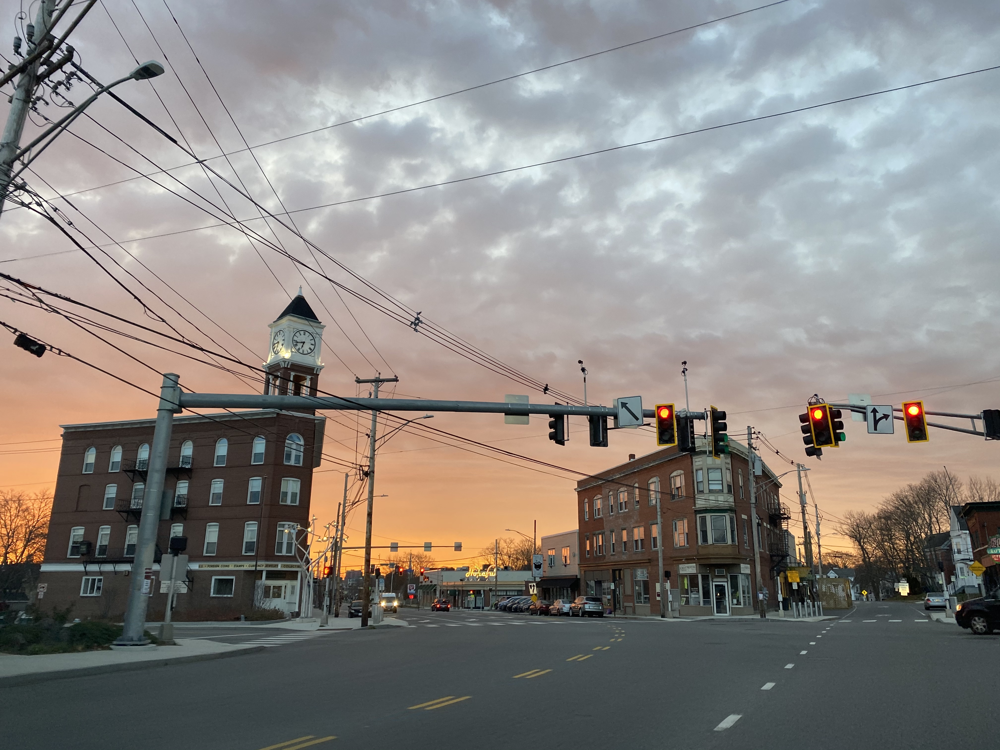

Welcome to Walk Portland, a website designed to introduce you to all of Portland, Maine's neighborhoods!
About this projectJump to a neighborhood:
- Back Cove
- West Bayside
- Deering Center
- Downtown
- East Bayside
- East Deering
- Libbytown
- Munjoy Hill
- Nason's Corner
- North Deering
- Parkside
- Peaks Island
- Riverton
- Rosemont
- St. John Valley
- Stroudwater
- West End
- Woodfords-Oakdale
Back Cove

The Back Cove neighborhood spans from Forest Avenue to Washington Avenue and Canco Road to Baxter Boulevard. The neighborhood surrounds the Back Cove tidal basin, for which it gets its name. Also referred to as “The Back Bay”, “The Boulevard”, and “The Cove”, the Back Cove neighborhood is a popular area for outdoor activities. Frequently visited parks within the neighborhood include Heseltine Park, Edward Payson Park, Canco Woods, and one of the city's most popular walking and running routes, the 3.6 mile Back Cove Trail.
- Walking Trails/Areas:
- Small: The streets going up from Clifton St. are a great place for a quiet stroll.
Map - Medium: If you're looking for a peaceful walk (or perhaps a mountain bike) in the Back Cove neighborhood, Canco Woods might be just what you are looking for.
Map - Large: Likely the most popular walking, running, and biking route in the city, the Back Cove Trail is for those looking for a roughly hour-long walk (depending on speed). To extend your walk, turn off of the bridge onto Bayside Trail and go out as long as you wish.
Map
- Small: The streets going up from Clifton St. are a great place for a quiet stroll.
West Bayside
The neighborhood of West Bayside is sandwiched between Franklin St. to Forest Ave. and Cumberland Ave. to Marginal Way. West Bayside is home to many manufacturing buildings and social servies, but also a vibrant and diverse community.
- Walking Trails/Areas:
- Small: The Bayside trail connects the West Bayside and East Bayside neighborhoods, and is the perfect distance for a short walk (1 mile).
Map - Medium: Deering Oaks is another great place to walk and is easy to access from anywhere in the West Bayside Neighborhood. It features a playground, duck pond, tennis courts, and a baseball field between its paths.
Map - Large: Like many neighborhoods in Portland, West Bayside has quick access to the Back Cove Trail. The trail can be accessed from the Bayside Trail. Another option splitting off from the Bayside Trail is the Eastern Promenade Trail which looks out over Casco Bay.
Map
- Small: The Bayside trail connects the West Bayside and East Bayside neighborhoods, and is the perfect distance for a short walk (1 mile).
Deering Center

Known for its quiet neighborhoods, proximity to schools and parks, and assortment of small shops, Deering Center is a great place to explore. The neighborhood sits between Woodford St. to Walton St. and Forest Ave. to Brighton Ave.. A very walkable neighborhood, Deering Center includes many areas of recreation including Presumpscot Park and Mayor Baxter Woods as well as Evergreen Cemetery in the Riverton neighborhood which borders Deering Center.
- Walking Trails/Areas:
- Small: If your're looking for a short walk, Baxter Pines and the Deering High School campus are a good place to go. Starting on Leland St. and walking up the hill to Pleasant St., down Stevens Ave., and looping back to Leland St. via Ludlow St., is just a little less than a mile. A loop through Baxter Pines or around the baseball fields would add some extra distance.
Map - Medium: Baxter Woods, a 30 acre nature preserve between Stevens Ave. and Forest Ave. has a small network of trails that can be combined for a bit of a longer walk. Especially in hot summer months, the tall pines provide plenty of shade to stay cool.
Map - Large: While Evergreen Cemetery techinically lies in the Riverton neighborhood, it's entrances are on streets that are part of Deering Center. The garden style cemetery is home to many trails, carriage paths, and even duck ponds, giving walkers hours of land to cover and enjoy.
Map
- Small: If your're looking for a short walk, Baxter Pines and the Deering High School campus are a good place to go. Starting on Leland St. and walking up the hill to Pleasant St., down Stevens Ave., and looping back to Leland St. via Ludlow St., is just a little less than a mile. A loop through Baxter Pines or around the baseball fields would add some extra distance.
Downtown

Downtown Portland is best known for its expansive food, art, and small business scene. Downtown lies between High St. to Franklin St. and Cumberland Ave. to the warerfront. While much of the Downtown neighborhood is taken up large bulidings and busy streets, there are no shortage of places to walk around and explore.
- Walking Trails/Areas:
- Small: One of the most common places to walk Downtown is just on the the streets. There are many quiet cobblestone streets that lead right towards the waterfront. Lincoln Park on Pearl St. is a good place to start.
Map - Medium: Arguably the most scenic route in Portland, the Eastern Promenade trail wraps around the downtown waterfront and the Eastern Promenade.
Map - Large: If you're looking for a long walk, the Harborwalk Trail goes across the Casco Bay bridge into South Portland. This route eventually becomes the South Portland Greenbelt. If you take the Greenbelt to the left and then all the way to the end, you will find yourself at Buglight Park, which has a great view of the Portland harbor.
Harborwalk Trail Info
- Small: One of the most common places to walk Downtown is just on the the streets. There are many quiet cobblestone streets that lead right towards the waterfront. Lincoln Park on Pearl St. is a good place to start.
East Bayside
The East Bayside neighborhood lies between Washington Ave. to Franklin St. and Congress St. to Marginal Way. East Bayside is home to many breweries, cafes, and up-and-coming local businesses. There are several areas of recreation within and near this neighborhood including the Bayside trail, the Back Cove trail, and Kennedy Park, home to the Kennedy Park Football Club.
- Walking Trails/Areas:
East Deering

Between Payson Park to Martin's Point and Ocean Ave. down to Casco Bay, lies the East Deering neighborhood. East Deering's location gives it access to many parks and trails as well as the nearby Town of Falmouth.
- Walking Trails/Areas:
- Small: Edward Payson Park and the Ocean Ave. Recreation Area (contains Quarry Run Dog Park) both offer nice places to walk.
Map (Payson Park)
Map (Ocean Ave. Recreation Area) - Medium: Back Cove Trail
Map - Large: Martin Point to Mackworth Island (follow the Martin Point Bridge out to Falmouth then turn right on Andrews Ave.)
Map
- Small: Edward Payson Park and the Ocean Ave. Recreation Area (contains Quarry Run Dog Park) both offer nice places to walk.
Libbytown

A collection of streets spanning down from Brighton Ave. and between County Way to Frost St.. Several of Portland's popular destinations are in Libbytown including Thompson's point and Hadlock Field.
- Walking Trails/Areas:
- Small: Dougherty Field
Map - Medium: When open to the public, Waynflete's athletic complex is a good place to walk around. If you walk far enough, you'll find views of Fore River. If you follow the Osgood St. back out to Hobart St., you can add to your walk by exploring some of the Fore River trail.
Map - Large: While the Fore River Trail is only a mile long, crossin Congress St. will quickly connect you to the network of trails in the Fore River Sanctuary.
Map
- Small: Dougherty Field
Munjoy Hill
The Munjoy Hill neighborhood is bounded by Washington Ave. and Mountfort St. and the Eastern Promenade Trail. Munjoy Hill is home to the largest developed park in Portland, the Eastern Promenade, as well as Portland's only public beach, the East End Beach. On almost any given day, the park will be filled with people enjoying the view of Casco Bay, with food trucks lining the street, ready to feed them.
- Walking Trails/Areas:
- Small: Fort Sumner Park and its surrounding streets are nice to explore. Just down the street is the East End Community School as well as the community gardens.
Map - Medium: The Eastern Promenade
Map - Large: Eastern Promenade Trail (can be extended to the Back Cove or looped back on the Midslope Trail)
Map
- Small: Fort Sumner Park and its surrounding streets are nice to explore. Just down the street is the East End Community School as well as the community gardens.
Nasons Corner

Nasons Corner borders the town of Westbrook on the left and the outpart of Brighton Ave., starting at Wayside Rd., on the right. A couple of Portland's nature preserves are in this neighborhood including the Fore River Sanctuary and Capisic Pond. With many trails that wind their way through these sanctuaries, Nasons Corner has an abundance of places to explore.
- Walking Trails/Areas:
- Small: Capisic Pond Park has a quiet short trail. Amanda C. Rowe Elementary School also has nice walking paths that connect to quiet neighborhood streets.
Map (Capisic Pond Park)
Map (Amanda C. Rowe) - Medium: On the border of Nason's Corner are Evergreen Cemetery's network of trails.
Map - Large: The Fore River Sanctuary has many walking trails that can be easily accessed from Nason's Corner via Rowe Ave. and Hillcrest Ave..
Map
- Small: Capisic Pond Park has a quiet short trail. Amanda C. Rowe Elementary School also has nice walking paths that connect to quiet neighborhood streets.
North Deering

The largest neighborhood in Portland, North Deering is located between the Back Cove, East Deering, and Riverton neighborhoods as well as the nearby town of Falmouth. Compared to other neighborhoods in Portland, North Deering is much more suburban, leaving it to have several undeveloped/protected areas. Most notably, North Deering is home to the Presumpscot River Preserve where a section of the Sebago to Sea Trail runs through.
- Walking Trails/Areas:
- Small: Riverton Rail Trail and Pine Grove Park
Info for Riverton Rail Trail
Map (Pine Grove Park) - Medium: Ocean Ave. Recreation Area (contains trails through Quarry Run Dog Park, Virginia Woods, old city landfill)
Map - Large: Presumpscot River Preserve
Map
- Small: Riverton Rail Trail and Pine Grove Park
Parkside

The name of the small neighborhood sitting between Weymouth St. to Forest Ave. and I-295 to Congress St. is perfectly suited for a neighborhood known for its park, Deering Oaks. However, Deering Oaks isn't the only popular destination to call the Parkside neighborhood home. Parkside has several museums, small businesses, and popular restaurants/cafes.
- Walking Trail/Areas:
- Small: Fitzpatrick Stadium (public track; 1 mile = 4 laps)
Map - Medium: Deering Oaks Park
Map - Large: While not part of Parkside, the Back Cove Trail is relatively close (about 1 mile from Deering Oaks Park). Another good route, starting at Deering Oaks, would be to follow State St. onto the Casco Bay Bridge, cross the bridge then turn left on Erskine Dr., then left on Waterman Dr. until the Thomas Knight Park where there is a ramp back onto the bridge. At this point you can go back the same way you came. Depending on where you choose to start in Deering Oaks, this loop is just over 4 miles.
Map (Back Cove Trail)
Map (Casco Bay Bridge)
- Small: Fitzpatrick Stadium (public track; 1 mile = 4 laps)
Peaks Island
What some people might not know is that Peaks Island, the most populated island in Casco Bay, is actually one of Portland's neighborhoods. Peaks island is about 740 acres and 3 miles from Portland, just a 20 minute ferry ride away.
- Walking Trails/Areas:
Riverton

The Riverton neighborhood is bordered by the Town of Westbrook, Evergreen Cemetery and the train tracks that cross Allen Ave.. Riverton variety of greenspaces offer plenty of recreation areas including golfing, sledding, and skiing at Riverside Golf Course.
- Walking Trails/Areas:
- Small: Not too far away: PATHS High School Trail
Map - Medium: Riverton Rail Trail (3 miles out and back), Riverton Trolley Park (trail) and Evergreen Cemetery are all great places to walk.
Riverton Rail Trail Info
Map (Riverton Trolley Park)
Map (Evergreen Cemetery) - Large: The Presumpscot River Trail offers a quiet place to walk/run. Riverside Golf Course is also a great place to walk, especially in the winter when the trails are groomed for skiers. If you do choose to walk here during the winter, make sure to follow the signs on the trails that direct foot traffic to a trail opposite from skiers.
Map (Presumpscot River Trail)
Map (Riverside Golf Course)
- Small: Not too far away: PATHS High School Trail
Rosemont

The quiet neighborhood called Rosemont is tucked between the Libbytown and Deering Center. It is full of old homes, local businesses (such as the popular Rosemont Market and Bakery), and several quiet places to walk.
- Walking Trail/Areas:
- Small: Capisic Brook Trail
Map - Medium: The Fore River Sanctuary "Starbird" trail begins on Starbird Rd.. Taking just rights on the trail will lead you to a gravel uphill the comes out on Hillcrest Ave.. A sharp right at the end of this road will put you onto Capisic Rd., leading back towards Starbird Rd..
Map - LargeThe Oxford Cumberland Canal Trail provides a nice wooded walk with easy access to other trails in the Fore River Sanctuary.
Map
- Small: Capisic Brook Trail
St. John Valley

St. John Valley is located between the Libbytown and the Western Promenade. Its proximity to Libbytown gives residents in the neighborhood plenty of places to explore.
- Walking Trail/Areas:
- Small: The Western Promenade has a nice path that looks out over St. John Valley and Fore River. It is easy to connect to other trails from the path such as the Carriage Path near the Western Cemetery or the Maine Med Path near Maine Medical Center.
Map - Medium: For something more convenient, just walking along Valley St. to Danforth St. and then to streets in the West End neighborhood gives you a ample opportunity to explore.
Map - Large: Fore River Parkway Trail (can add on to this route by hopping on the Fore River Trail beginning at Thompson's Point)
Map
- Small: The Western Promenade has a nice path that looks out over St. John Valley and Fore River. It is easy to connect to other trails from the path such as the Carriage Path near the Western Cemetery or the Maine Med Path near Maine Medical Center.
Stroudwater

The Stroudwater neighborhood is bounded by South Portland, Westbrook, and the railroad tracks that cross Congress St.. The quiet neighborhood is full of history as it is home to the Stroudwater Historic District, Portland's only surviving early settlement.
- Walking Trails/Areas:
- Small: Westbrook St. and the other strees branching off from it can be enjoyable places to walk. Some of the oldest homes in Portland, including the Tate House, are on this street.
Map (Tate House) - Medium: Stroudwater has easy access to the Fore River Sanctuary, with the closest entrances to its network of trails at the Maine Orthopaedic Center and just before the bridge at the western end of Westbrook St..
Map - Large: The Forest City Trail, a 10-mile trail that goes winds its way through Portland, starts in the Stroudwater neighborhood. While this is a great trail to explore, the Stroudwater Trail offers a more reasonable distance for the average person along with the ability to turn around at any point. It is around 3.3 miles out (6.6 total).
Forest City Trail Info
Map (Stroudwater Trail)
- Small: Westbrook St. and the other strees branching off from it can be enjoyable places to walk. Some of the oldest homes in Portland, including the Tate House, are on this street.
West End

The West End neighborhood is the part of Portland's peninsula between St. John Valley, Parkside, and Downtown. The West End is a very historic neighborhood with many victorian-style houses that were built following the Great Fire of 1866.
- Walking Trails/Areas:
- Small: The West End and St. John Valley share many of the same walking areas because of their nearness to eachother. The Western Promenade is one of these places (see "Small" under Walking trails/areas for St. John Valley).
Map - Medium: Deering Oaks is not far from the West End. Starting on the Western Promenade, follow Bramhall St. to Deering Ave. and then down and the park will be directly in front of you. Another, but much smaller, park in walking distance from anywhere in the West End is the Harbor View Memorial Park on York St. overlooking Casco Bay.
Map (Deering Oaks)
Map (Harbor View Memorial Park) - Large: Both the Harborwalk Trail and the Fore River Parkway are easy to access from the West End.
Harborwalk Trail Info
Map (Fore River Parkway)
- Small: The West End and St. John Valley share many of the same walking areas because of their nearness to eachother. The Western Promenade is one of these places (see "Small" under Walking trails/areas for St. John Valley).
Woodfords-Oakdale
Woodfords-Oakdale extends up from the Back Cove roughly between the Parkside, Rosemont, and Back Cove neighborhoods. Within the neighborhood is an array of popular local restaurants and stores such as Big Sky Bakery and The Great Lost Bear.
- Walking Trails/Areas:
- Small: The tree-lines streets within Woodfords-Oakdale are very quiet and provide a nice place to stroll. Longfellow Park on Noyes St. is a nice place to walk to.
Map - Medium: Deering Oaks and Baxter Woods are relativley close to the neighborhood. For Baxter Woods, the entrance on Hartley St. may be the most convenient to Woodfords-Oakdale residents.
Map (Deering Oaks)
Map (Baxter Woods) - Large: Back Cove Trail
Map
- Small: The tree-lines streets within Woodfords-Oakdale are very quiet and provide a nice place to stroll. Longfellow Park on Noyes St. is a nice place to walk to.